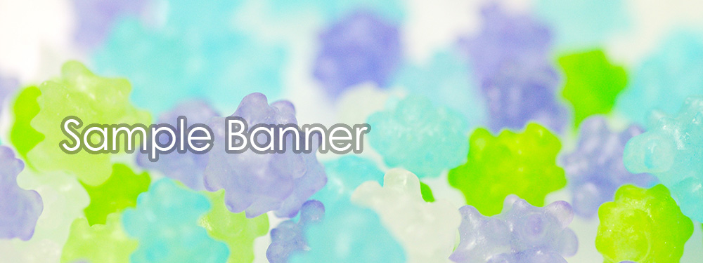

当テンプレートについて
当テンプレートはレスポンシブWEBデザインです
パソコン、スマホ、タブレットなど、各端末サイズでレイアウトが自動で切り替わります。
古いブラウザで閲覧した場合にCSSの一部が適用されない（角を丸くする加工やグラデーションなどの加工等）のでご注意下さい。
各デバイスごとのレイアウトチェックは
最終的なチェックは実際のタブレットやスマホで行うのがおすすめですが、臨時チェックは最新のブラウザで行う事もできます。ブラウザの幅を狭くしていくと、各端末サイズに合わせたレイアウトになります。
各デバイス用のスタイル変更は
cssフォルダのstyle.cssファイルで行って下さい。詳しい説明も入っています。
前半はパソコン環境を含めた全端末の共通設定になります。中盤以降、各端末向けのスタイルが追加設定されています。
media=" (～)"の「～」部分でcssを切り替えるディスプレイのサイズを設定しています。ここは必要に応じて変更も可能です。
小さい端末（※幅800px以下）の環境でのみ
メインメニューが折りたたみ式（３本バーアイコン化）になります。バーのスタイル設定もstyle.cssで行う事ができます。
画像ベースは
「base」フォルダに入っていますのでご自由にご活用下さい。
写真の元素材を当社運営のPHOTO-CHIPSやDECORUTOで配布している場合もございます。
当テンプレートの使い方
初心者向けマニュアル公開中
画像加工やテンプレートの編集方法、無料サーバーを使ってサイトを公開するなど動画をまじえてわかりやすく解説しています。
初心者向けマニュアルはこちら。
注意：当テンプレートにはメインメニューが「２箇所」入っています
パソコンなどの大きな端末「menubar（幅801px以上）」向けと、タブレットやスマホなどの小さな端末「menubar-s（幅800px以下）」向けがそれぞれ入っています。大きな端末向けは編集ソフトで見れると思いますが、小さな端末向けは見えないと思いますのでhtml側で編集して下さい。
titleタグ、copyright、metaタグ、他の設定
titleタグの設定はとても重要です。念入りにワードを選んで適切に入力しましょう。
まず、htmlソースが見れる状態にして、
<title>個人サイト向けシンプル無料ホームページテンプレート tp_simple7</title>
を編集しましょう。
あなたのホームページ名が「SAMPLE WEB SITE」だとすれば、
<title>SAMPLE WEB SITE</title>
とすればＯＫです。SEO対策もするなら冒頭に重要なワードを入れておきましょう。
copyrightを変更しましょう。
続いてhtmlの下の方にある、
Copyright© SAMPLE WEB SITE All Rights Reserved.
の部分もあなたのサイト名に変更します。
metaタグを変更しましょう。
htmlソースが見える状態にしてmetaタグを変更しましょう。
ソースの上の方に、
content="ここにサイト説明を入れます"
という部分がありますので、テキストをサイトの説明文に入れ替えます。検索結果の文面に使われる場合もありますので、見た人が来訪したくなるような説明文を簡潔に書きましょう。
続いて、その下の行の
content="キーワード１,キーワード２,～～～"
も設定します。ここはサイトに関係のあるキーワードを入れる箇所です。10個前後ぐらいあれば充分です。キーワード間はカンマ「,」で区切ります。
h1ロゴのaltタグも変更しましょう。
html側に、
alt="SAMPLE WEB SITE"
となっている箇所があるので、この部分もあなたのサイト名に変更しましょう。
上部のロゴ画像について
文字なしの土台画像がbaseフォルダに入っていますのでそれにサイト名をのせてimagesフォルダに上書きして下さい。画像の大きさは自由に変更してもらっても構いませんがある程度大きくしておいた方が高解像度の端末で鮮明に見えます。
ロゴサイズ変更は
cssフォルダのstyle.cssの「header #logo」のwidthの数字で変更できます。各端末サイズごとに設定がある場合があるので注意して下さい。
ロゴの背景色は
上のブロック内にある「background」で指定しています。古いブラウザ用と２行並んでいますので変更される場合は注意してさい。
トップページのスライドショーについて
トップページだけスライドショーになっています。
css3に対応した環境でしか動作しません。
css3に対応していない古い環境（IEなら9以下）から見た場合、「最後」の画像のみが固定表示される事になります。
「最初」の画像を表示させていたい場合はこちらをご覧下さい。
画像を入れ替えたい場合
「1.jpg」「2.jpg」「3.jpg」の3枚の画像を用意してimagesフォルダに上書きして下さい。大きさはある程度大きければバラバラでも構いませんが、必ず「縦横比」を合わせて下さい。
また、拡張子が「jpeg」や「JPG」と少し違った場合にうまく表示できない可能性があるので梱包画像の拡張子と合わせて下さい。拡張子を変更したい場合はhtml側を直接変更しても構いません。
画像は容量が軽くなるようにできるだけ圧縮して下さい。容量が大きいと初動がガタつきます。
ループを一回で終了したい場合
cssフォルダのslide.cssの、
@keyframes slide3 {
の、
95% {opacity: 0;}
100% {opacity: 0;}
を、以下に変更。
95% {opacity: 1;}
100% {opacity: 1;}
続いて、
.slide1,.slide2,.slide3 {
の、
animation-iteration-count:infinite;
を以下に変更。
animation-iteration-count:1;
固定画像にしたい場合
トップページ以外のhtmlのタグをコピペして下さい。
速度や枚数などの調整
cssフォルダのslide.cssで行って下さい。解説も入っています。
スライドショーに関する詳しい使い方はこちら。
リストタグを使いたい場合の注意点
そのままではリストマークが出ませんので、リストタグを使う場合は以下のようなスタイルを追加して下さい。
<ul class="disc">
<li>リストタグ</li>
<li>リストタグ</li>
<li>リストタグ</li>
</ul>
↓出力例
- リストタグ
- リストタグ
- リストタグ
- olタグはそのままででます。
- olタグはそのままででます。
- olタグはそのままででます。
- olタグはそのままででます。
Galleryページの機能について
サムネイル画像をクリックした際に画面が暗転して大きなポップアップ画像が出てくる仕組みには、lightbox2というjavascriptライブラリを使用しています。
このテンプレートでは「lightbox-plus-jquery.min.js」と「lightbox.css」をCDNから読んでいますが、もしlightboxの動作がおかしくなった場合はここのバージョンを変更して読み込んでみて下さい。
「lightbox-plus-jquery.min.js」は各htmlの下の方に、「lightbox.css」はcssフォルダのstyle.css冒頭で読み込み指定をしています。バージョンを変更する際はここを編集して下さい。
画像の追加方法など、実際の使い方については、Galleryページに記載しています。
左コンテンツにあるバナー画像について
html側には以下の２種類の画像が配置されています。


パソコンなどの大きな端末で見た場合、上段のバナー画像が表示されますが、そのまま小さな端末レイアウトになってしまうと１カラム化される分、バナーが特大サイズになってしまうので、高さを圧縮した下段のタイプを用意してそちらを表示させるようにしています。
表示の切り替えは簡単で、大きな端末（801px以上）で見せたい方にはclass="pc"とし、小さい端末（800px以下）で見せたい方にはclass="sh"とするだけです。
このスタイルは他のブロックなどにも臨機応変に使えます。画面サイズで表示内容を変えたい時など利用して下さい。
左右のブロックを入れ替えたい場合
cssフォルダのstyle.cssの、
#mainの「float: right;」を「float: left;」に、
#subの「float: left;」を「float: right;」にする。
スクロール中に出る「↑」アイコンについて
fixmenu_pagetop.jsで動作の制御を、cssフォルダのstyle.css内の
/*PAGE TOP（↑）設定
でボタンデザインを設定しています。
ボタンの出現ポイントは、現在350pxの場所になっています。変更したい場合はfixmenu_pagetop.jsの34行目あたりにある、
offsettop = 350;
の350を変更して下さい。